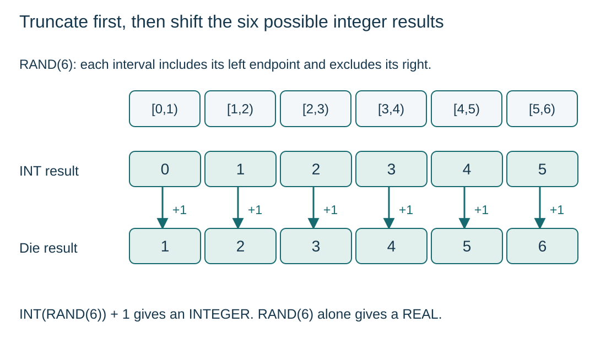

Use numeric built-in functions
Visual overview
Truncate first, then shift the six possible integer results

Visual transcript
- RAND(6) returns a real value x with 0 <= x < 6.
- INT maps the six intervals [0,1), [1,2), …, [5,6) to integers 0, 1, …, 5.
- Adding 1 produces die values 1 through 6. The endpoint 6 is excluded from RAND(6), but included in the final integer results.
Read the routine contract
A built-in function is supplied by the language; a library routine supplies reusable operations through an interface. A function call gives arguments in the specified order and supplies a returned value to the surrounding expression. Check the accepted types and the meaning of the result before using it.
Build a bounded integer result
INT(X) returns the integer part of real X. RAND(X), for a positive integer bound X, returns a real value from zero inclusive to X exclusive. INT(RAND(6)) + 1 therefore produces an integer from one to six. The addition shifts the possible values after truncation; RAND(6) alone does not return a die face.
Follow the die expression through its stages
| Supplied RAND(6) result | INT result | After adding 1 |
|---|---|---|
| 0.0 | 0 | 1 |
| 2.75 | 2 | 3 |
| 5.999 | 5 | 6 |
Separate a possible result from a promised result
These selected random values illustrate the transformation; they are not predicted outputs of a fresh random call. A call returns one value. Calling RAND again requests another draw, so store a result when two later operations must use the same draw.
Use the result in an expression
INT takes the integer part, rather than rounding to the nearest integer. The non-negative inputs here make the truncation and interval argument explicit. Defining your own function is taught in Lesson 081; using a supplied function only needs its interface and result contract.
Worked example · Use a numeric function and store one random draw
- Requirements and starting conditions
Input a non-negative REAL Score. INT takes its integer part; RAND(6) returns a REAL in [0,6).
- Cambridge pseudocode
DECLARE Score : REAL DECLARE Die : INTEGER INPUT Score Die <- INT(RAND(6)) + 1 OUTPUT INT(Score), Die - Expected result
Score 4.8 gives integer part 4. The second output is one INTEGER from 1 to 6; it varies with the random draw.
Core explanation · Exam essentials
- Check the argument type, order and returned type before using a routine.
- RAND(N) returns a REAL in [0, N); INT(RAND(N)) + 1 gives integers 1 through N for positive INTEGER N.
Optional extension: generate another inclusive integer interval
For integer bounds Low <= High, INT(RAND(High - Low + 1)) + Low shifts an interval of the required width. The bound supplied to RAND must be positive. This is an application of the supplied numeric contracts.
Example: Low 3, High 7
| Stage | Possible values |
|---|---|
| RAND(5) | REAL values from 0 inclusive to 5 exclusive. |
| INT | 0, 1, 2, 3, 4 |
| Add Low | 3, 4, 5, 6, 7 |